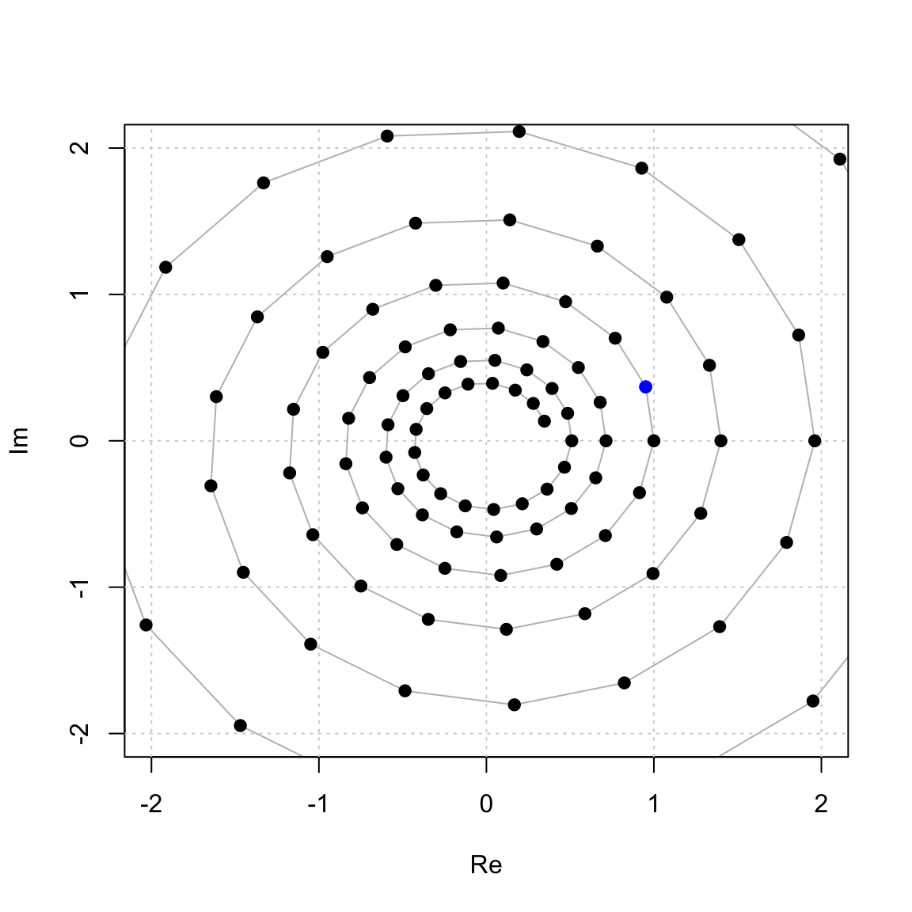
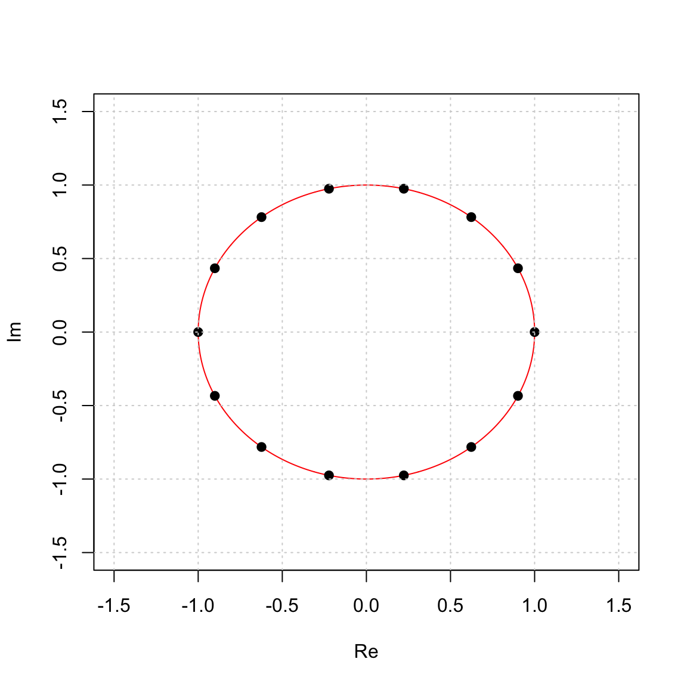
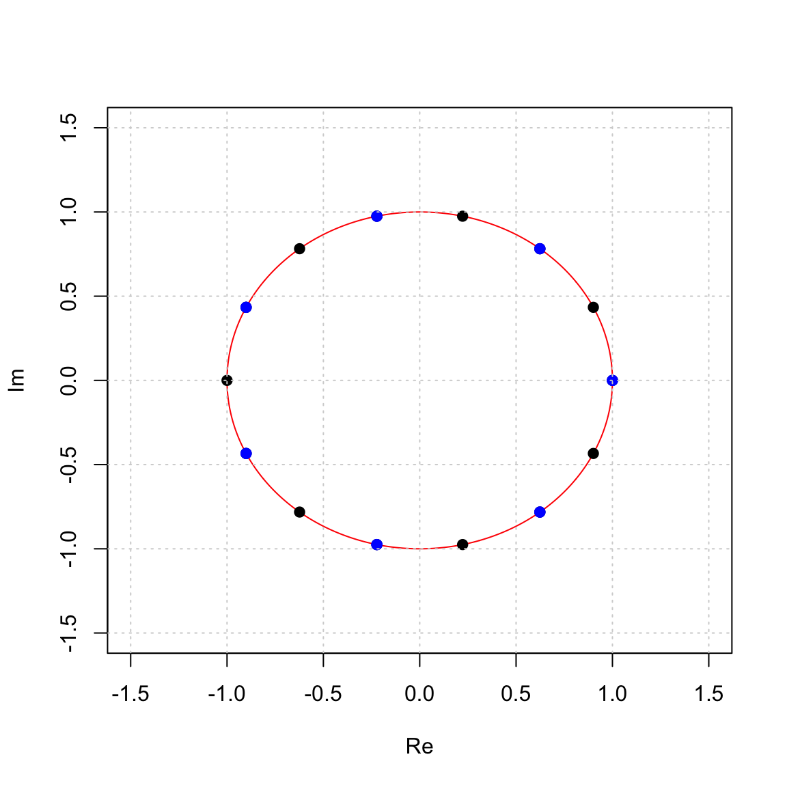
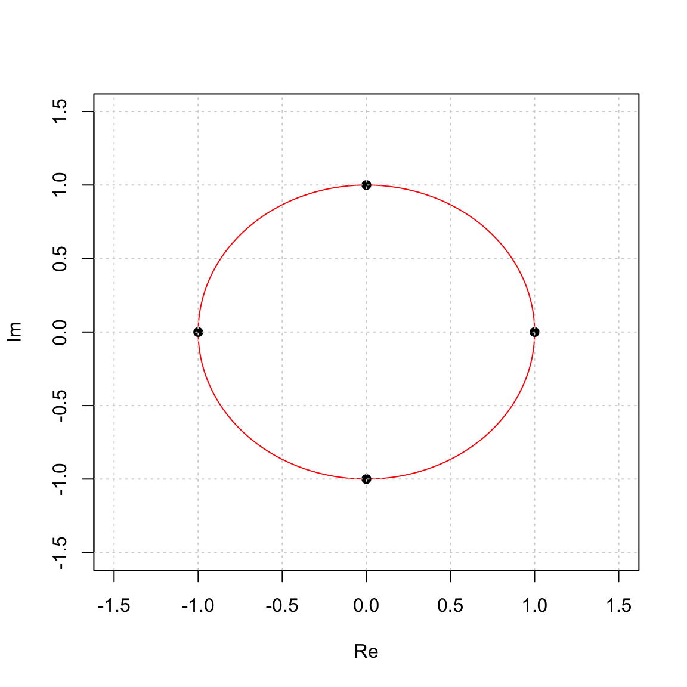
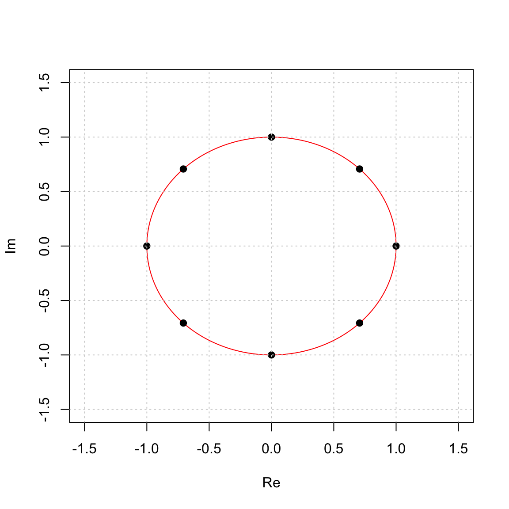

Section 15 Complex n-th roots of unity
15.1 Cyclic subgroups of \(\mathbb{C}^\ast\)
Let’s look at the cyclic subgroup generated by the complex number given in polar and rectangular form by \[ z = 1.02 e^{2 \pi i /17} = 0.9511 + 0.3685 i \] First, here is how to define it in R.
## [1] 0.9511217+0.3684665iObserve that the length of \(z\) is 1.02 and its angle is \(2 \pi/17\), or \(1/17\) of a circle.
Now, we can plot \(\langle z \rangle\) by raising it to a bunch of powers and plotting it according to its real and imaginary parts. You see that the positive powers of z cycle out to infinity and the negative powers cycle in to 0.
G = z^(-50:100)
plot(Re(G),Im(G),col='gray',xlim=c(-2,2),ylim=c(-2,2),type='l',xlab="Re",ylab="Im")
grid()
points(Re(G),Im(G),col='black',pch=19)
points(Re(z),Im(z),pch=19,col='blue')
In this case we get an infinite cyclic group \[ \langle z \rangle = \{ \ldots, z^{-3}, z^{-2}, z^{-1}, 1, z, z^2, z^3, \ldots \} \le \mathbb{C}^\ast, \] and all of these powers of \(z\) are distinct elements in $^
15.2 Roots of Unity
Suppose now that we pick a point on the unit circle and do the same thing. For this first example, we will use a point that is 1/14 of the way around the circle. Notice that we are choosing \(r = 1\) to get a point on the unit circle. \[ w = e^{2 \pi i/14} = 0.9009698 + 0.4338837 i \]
## [1] 0.9009689+0.4338837iWhen we plot \(\langle w \rangle\) we get

In this case we get a cyclic subgroup of order 14 \[ \langle w \rangle = \{1, w, w^2, \dots, w^{13}\} \le \mathbb{C}^\ast, \] and we really see, geometrically, why the term cyclic subgroup makes sense, because the numbers cycle around.
We can even see subgroups in here. For example, the next picture shows the subgroup \(\langle w^2 \rangle \le \langle w \rangle\). \[ \langle w^2 \rangle = \{1, w^2, w^4, w^6, w^8, w^{10}, w^{12}\} \le \{1, w, w^2,w^3,w^4,w^5,w^6,w^7,w^8,w^9,w^{10},w^{11},w^{12} w^{13}\} = \langle w \rangle. \]

In this example, the complex number \(w\) has the property that \[ w^{14} = 1. \] and if we take any other element fro the group it also has this property \[ \text{ if } \quad w^j \in \langle w \rangle \quad \text{then} \quad (w^j)^{14} = w^{14 j} = (w^{14})^j = 1^j = 1. \] So all 14 elements of \(\langle w rangle\) are solutions to the equation \[ x^{14} = 1 \qquad \hbox{or} \qquad x^{14} - 1 = 0. \] Since this is a 14th degree polynomial equation, it has 14 complex solutions (according to the Fundamental Theorem of Algebra), and so these are all of the solutions to this equation. There are two real solutions 1 and -1 and the other 12 are purely complex. These are called the 14th roots of unity.
15.2.1 Cube Roots of Unity
The cube roots of unity are solutions to \(x^3 - 1 = 0\). They are generated by the complex number that is 1/3 of the way around the circle. \[ w = e^{2 \pi i /3} = \cos(2 \pi/3) + \sin(2 \pi/3) i = \frac{1}{2} + \frac{\sqrt{3}}{2} i. \]
They generate a cyclic group of order 3: \[ \langle w \rangle = \{ w^0 = 1, \quad w = -\frac{1}{2} + \frac{\sqrt{3}}{2} i, \quad w^2 = - \frac{1}{2} - \frac{\sqrt{3}}{2} i\} \] which we see here:
15.2.2 4th Roots of Unity
The 4th roots of unity are solutions to \(x^4 - 1 = 0\). They are generated by \(i\): \[ w = e^{2 \pi i /4} = \cos(\pi/2) + \sin(\pi/2) i = i. \] and \[ \langle i \rangle = \{1, i, -1, - i\}. \]
They generate a cyclic group of order 4:

15.2.3 8th Roots of Unity
The 8th roots of unity are solutions to \(x^8 - 1 = 0\). They are generated by \(i\): \[ w = e^{2 \pi i /8} = \cos(\pi/4) + \sin(\pi/4) i = \frac{\sqrt{2}}{2} + \frac{\sqrt{2}}{2} i. \]
They generate a cyclic group of order 8:
